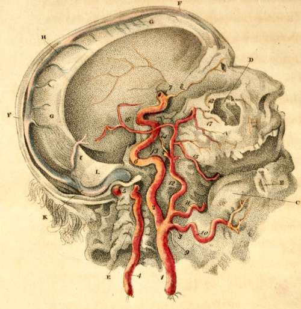

Vertical Section Of The Head
Description
This section is from the book "Engravings Of The Arteries", by Charles Bell. Also available from Amazon: Engravings Of The Arteries; Illustrating The Anatomy Of The Human Body, And Serving As An Introduction To The Surgery Of The Arteries.
Vertical Section Of The Head
Being the Distribution of the Internal Carotid, the Vertebral and Internal Maxillary Arteries, as seen upon making a vertical Section of the Head.
a. The Upper Jaw Bone; part of it is torn away.
b. The Lower Jaw Bone; all the angle of the right side is taken away, to show the internal maxillary artery.
c. The Tongue.
d. The Antrum Highmorianum, torn open.
e. The Vertebrae of the Neck, cut to show the passage of the artery, encased in the bones.
f. The Scull cap, sawn through exactly in the length of the longitudinal sinus.
g. The Falx, which divides the hemispheres of the Brain,
h. The Longitudinal Sinus,
i. The Fourth Sinus, returning the blood from the lower sinus of the falx, and from the vena galeni.
k. Right Lateral Sinus.
l. The Tentorium, which covers the cerebellum, and supports the posterior lobes of the cerebrum.
ARTERIES.
1. The Common Carotid Artery.
2. The Internal Carotid Artery.*
* Internal Carotid. In Dr. Hooper's collection oi' preparations, there is a curious example of the ulceration of this artery. A man intending to destroy himself, attempted to swallow pins tied together; they stuck in the pharynx, and in time penetrated to this artery, which suddenly cut him off.
3. The External Carotid Artery.
4. The Vertebral Artery; the processes of the vertebrae being cut away.
5. The last and violent turn of the Vertebral Artery, before entering the foramen magnum of the occipital bone.
6. The violent contortions of the Internal Carotid Artery, before entering the scull.
7. The point of the Internal Carotid Artery, where, after making its turns in its passage through the bone, it appears by the side of the sella turcica. See Plate V. 1.
8. The Ophthalmic Artery, derived from the carotid. It is this artery which is seen to inosculate with the Fascial artery, in the preceding Plate, at 5.
9. The Thyroid Artery.
10. The Lingual Artery.
11. The Fascial Artery cut short; it is seen in third Plate, fig. 2, passing over the jaw.
12. The Continued Trunk of the External Carotid Artery; it is about to divide into the temporal and internal maxillary arteries. See the preceding Plate (11.)
13. The Temporal Artery, cut short.
14. The Internal Maxillary Artery.
15. That Branch of the Internal Maxillary Artery, which passes into the lower jaw.
16. The Great or Middle Artery of the Dura Mater; a branch of the internal maxillary.*
17. The Artery of the Upper Jaw.
18. The Infra Orbital Artery; it is seen to pass out upon the face.
* It is this artery which rises through the spinous hole in the sphenoid bone, and then runs on the lower angle or spinous process of the parietal bone: here it generally lies in a deep channel, and gives occasion to a kind of rule in surgery, to avoid applying the trephine at this part.
Continue to: